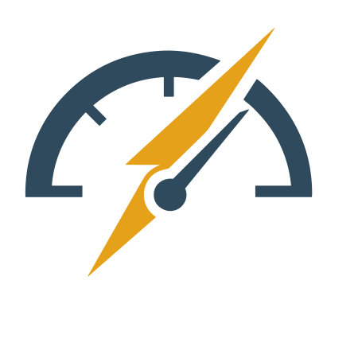

Electric Barometer
Forecasting & Decision Governance Framework
Cost-Aware Evaluation | Asymmetric Risk | Operational Readiness
Electric Barometer is a framework for rigorous assessment and governance of forecasting systems used in operational decision-making—prioritizing cost-aware metrics, interpretable risk trade-offs, and stable, auditable evaluation semantics.